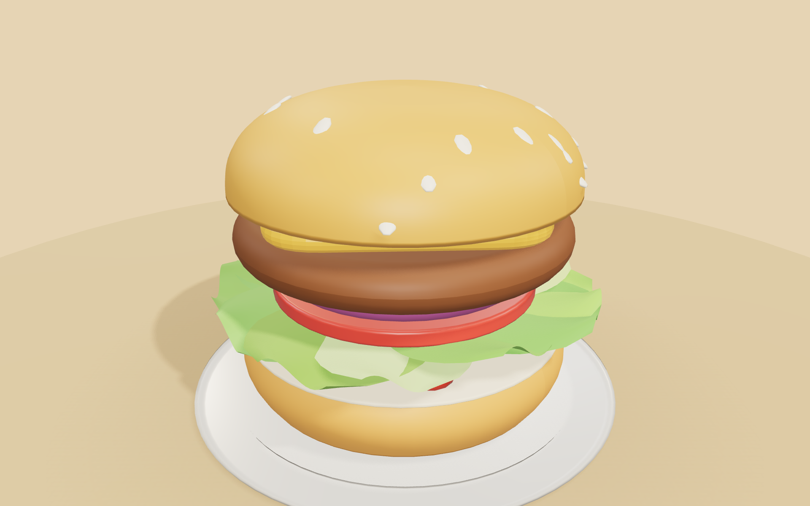
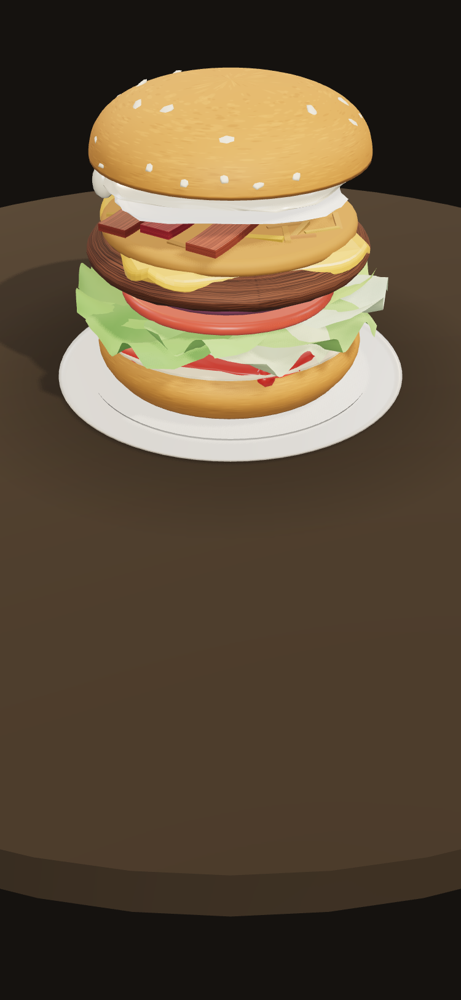

A 3D trainer that teaches a whole burger menu the way you actually learn it on the line: by building each recipe, one layer at a time.
I work at a burger grill. So do a lot of people on part-time shifts, a few hours a week squeezed around studies and other jobs. There is barely any time to sit and memorise thirty-plus recipes before the rush hits.
The company already has a learning app, but it is a static, tap-through quiz with no visuals and no building. You can pass it and still freeze at the line, because reading "patty, tomato, onion, sauce" is nothing like the muscle memory of stacking it. Most people ended up learning the real recipes from laminated cards and whoever was standing next to them.
Pick a burger. Build it from a tray of ingredients in a real 3D scene. Place the top bun to crown it, and that same gesture that finishes a real burger is what submits and scores the round.
Drag ingredients from the tray onto the plate. Each one drops, settles and squishes with light physics. Soft cheese and avocado deform, so the stack reads like a real burger instead of a flat diagram.
Sauce, then salad, then patty must go in that sequence, but anything above the patty counts in any order. That is how the burgers are assembled on the line, so forcing a strict topping order would teach the wrong thing.
There's no Submit button. You place the top bun like any other layer; the lid drops, the burger turns for a beat so you see what you built, then it's graded against the canonical recipe.
The game part is the surface. Every mechanic underneath is aimed at one thing: remembering the recipe when a ticket lands and there is no card to check.
A shift simulation. Tickets arrive one at a time showing only the burger name, and you build it from memory with the full tray and no recipe card. Five per shift, weighted toward the recipes you keep getting wrong. It is deliberately untimed, because rushing trains panic rather than memory.
A recipe only counts as Mastered after three Gold builds. One lucky correct build does not prove anyone learned it, so the green check has to be earned properly.
A "Needs practice" queue puts the weakest and least recently built recipes first, so people get pulled back to what they are forgetting instead of only moving forward through the menu.
Guided keeps the checklist visible with a short tray. Standard hides the recipe and gives the full tray (1.25× XP). Hard also requires the exact stacking order (1.6× XP). You progress by turning the difficulty up, not by unlocking locked cards.
Completion by category, gold counts, and trouble spots: the ingredients most often forgotten or wrongly added. That is the part a shift lead can actually coach against.
There is no sequential unlock. A cook needs to look up whatever was just ordered, so all 37 burgers are open from the start. Motivation comes from mastery and the review queue instead of grinding to unlock the next card.
Stylised 3D rather than photoreal: soft, rounded and brightly lit, closer to a friendly mobile game than to food photography. The whole job of the art is that every ingredient is identifiable at a glance, so silhouette matters more than surface detail.

Desktop · side panels, full 49-ingredient tray, the stack mid-crown
Mobile · one responsive build, bottom-sheet trayOne build serves web and phone. On mobile the 3D camera reads the bottom-sheet height and lifts the burger into the visible strip, auto-fitting the frame so tall builds never clip. It installs to a home screen and works offline after the first visit.
The decisions that never show up in a screenshot are the ones that make it usable on a real shift.
The whole menu lives in JSON as data instead of code. The menu changes seasonally, so updating it should never mean touching game logic. Every 3D shape comes from a shared, cached library of rounded primitives, so tall builds stay cheap to render.
It is also fully bilingual and accessible: German by default with a one-tap English toggle, real buttons with ARIA labels throughout, 44px touch targets, ingredient names shown as text next to every colour, and captions on every sound so nothing is audio-only.
Every ingredient, recipe, grade and badge translated. Defaults to German; remembers your choice.
37 recipes and 51 ingredients in JSON. A seasonal menu update is just a data edit.
Web-app manifest + service worker. Installs to a phone, works with no connection after first load.
Keyboard navigable, ARIA live regions, visible focus, colour never used alone. Sound has captions.
It is live, and colleagues from the kitchen and service reach for it on their own. That is the part I am proudest of.
It started as a fix for my own team, people on part-time shifts who needed to learn the recipes quickly without the training hours the schedule never gives them. It is not an official company tool, just something that spread because it was useful.
Word got around, and another restaurant now wants a version of their own tuned to their menu. That is exactly why the menu was built as swappable data from the start.
Using it to learn and refresh recipes between shifts.
Interested in their own menu-tuned version. Because the menu is data, that is closer to a reskin than a rebuild.
Progress is per-device today. Shared reporting for shift leads is the planned next step.
A training tool that oversells itself is worse than useless, so the limits are stated plainly, both in the app and here.
Progress lives in local storage on one device. Proper multi-trainee reporting needs a backend, and that is the next step on the roadmap.
The menu was seeded from the public menu site, which can omit a base ingredient or simplify the order. It carries a clear "validate against in-store recipe cards before real training use" flag.
It uses a real chain's recipe names for an internal training prototype. Any public or commercial release would need the brand's permission, which is flagged from the start.
There are no allergen tags, because inventing them would be dangerous in a training tool. Only the dietary category (Meat, Vegetarian, Vegan), which is factual.
A problem I lived every shift, turned into a tool my colleagues actually use. Open it, build a Klassik, and crown it.